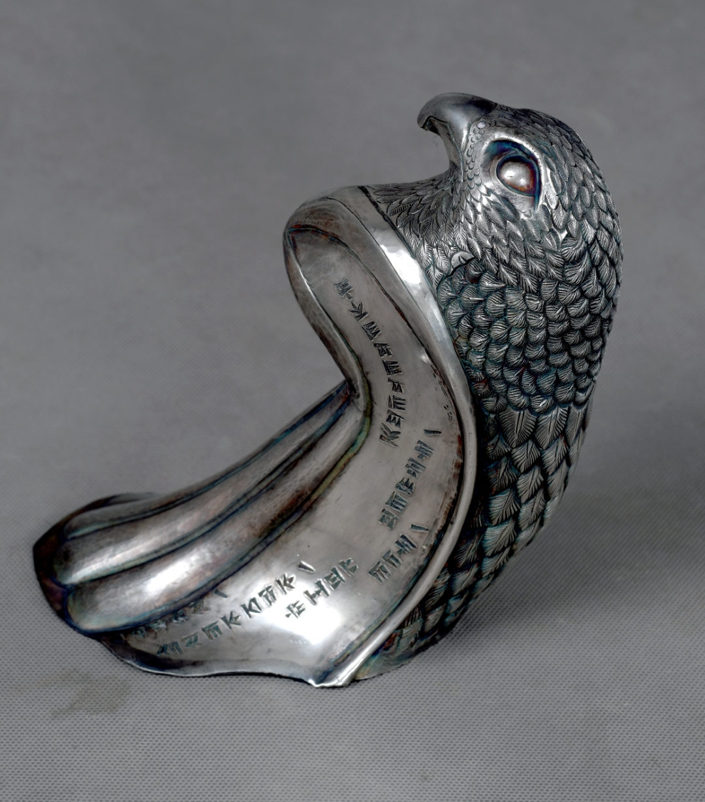

Guardian Falcon Takuk/Rhyton
A silver hero work carrying symbolism of vigilance, protection, elevated vision, and royal presence. One side refers to the lion hunting the bull as a symbolic image of the coming of spring; the other side carries a contemporary self-statement inspired by cuneiform visual language.